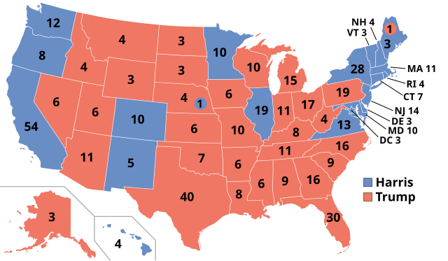
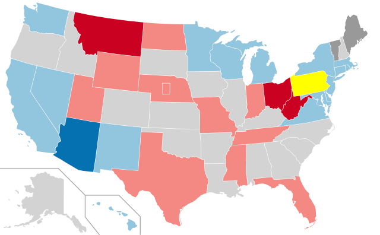
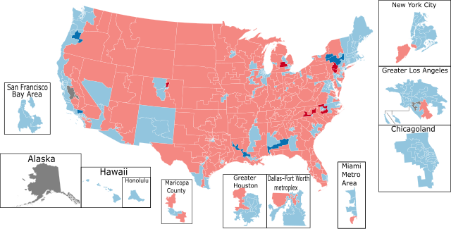

Current Elections
With most races called (beside a few outstanding left in the House and Senate) here are the most recent 2024 Election Results, data is taken from Wikipedia and CNN's election results.
2024 United States Presidential Election
- Donald Trump // JD Vance (GOP)
- 312 Electoral Votes
- 50.2% of the Popular Vote
- Kamala Harris // Tim Walz (Dem)
- 226 Electoral Votes
- 48.2% of the Popular Vote

2024 United States Senate Elections
- GOP (Minority Leader Mitch McConnell)
- Democrats (Majority Leader Chuck Schumer)

2024 United States House of Representatives Elections
- GOP (Speaker Mike Johnson)
- Democrats (Minority Leader Hakeem Jeffries)

Key:
- Blue = Democrats
- Red = Republicans
- Dark Blue = Democrat Pickup
- Dark Red = Republican Pickup
- Yellow = Too Close to Call
Back Home